Overview
Setting up TGEA is a simple process. When you license TGEA, you get access to full engine source code.
This gives you the power to make changes to the engine's functionality, should you choose to.
Studying the source-code is also a great way to learn about advanced game engine programming.
Even if you download the source code now, you need to prepare your system before you work with TGEA.
Installing A Compiler
Xcode Introduction
Before you can make any modifications to the engine's source code, you will need a developer tool that can compile code into a launchable application. Most PC users install and develop using Microsoft Visual Studio. For Mac OS X application development, we recommend you use Xcode which is a free download containing the Xcode IDE and the rest of the developer tools.
Getting Xcode
When it comes to obtaining the actual installer for Xcode, you have a few different options. Most Leopard discs have Xcode, which means you simply have to put the disc in your drive, find the setup file, and run it from there. For this tutorial, we will use a different procedure. We are actually going to download the latest version of Xcode directly from the Apple Developer Tools website. You can actually navigate directly to the Xcode Download Page. Once you are on the site, you will look for the Download Now Button (Shown in Figure 1). If you do not already have an ADC (Apple Developer Connection) account, you will want to create one. If you already have an account, you will enter your credentials at the login screen (Shown in Figure 2).
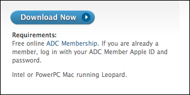
Figure 1
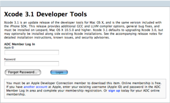
Figure 2
Once you are logged in as an ADC member, you can then proceed to the Xcode downloads section (Shown in Figure 3). You should be presented with two file downloads. The one you absolutely need is the Xcode Developer DVD (Disc Image). Go ahead and download that (Shown in Figure 4). Optionally, you can download the PDF which contains various descriptions and and features of Xcode.
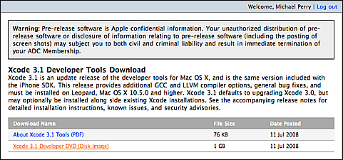
Figure 3
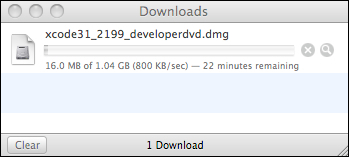
Figure 4
Installing Xcode
Once your downloading is complete, navigate to the directory where you downloaded the Xcode files. You should see a file called xcode31_2199_developerdvd.dmg (Shown in Figure 5). The numbers may be different defepending on what version you have downloaded. When you open that file, you are actually navigating a disc image just as if you were browsing a DVD in your drive. You should now see the Xcode installer (Shown in Figure 6). Open that file to begin the installation process. The first few screens you will be presented with are the Welcome Screen (Shown in Figure 7) and the License Agreement Screen (Shown in Figure 8). Click continue through the Welcome Screen and agree to the license terms.
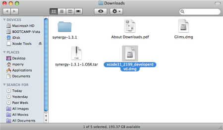
Figure 5
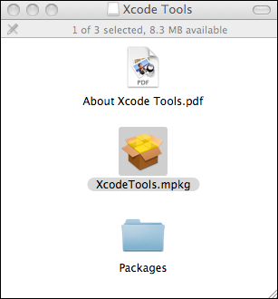
Figure 6
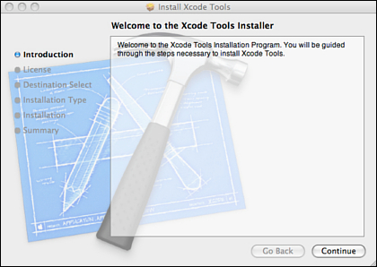
Figure 7
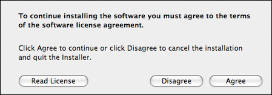
Figure 8
Once you've agreed to the licensing terms, you will be presented with a screen that allows you to customize your installation (Shown in Figure 9). Make sure your options reflect what is shown in Figure 9. Click continue to proceed. At this point, you will see a screen that allows you to change your installation directory (Shown in Figure 10). For the sake of simplicity, especially if you are a new developer, do not change the Installation Location.
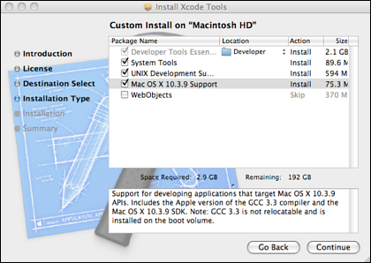
Figure 9
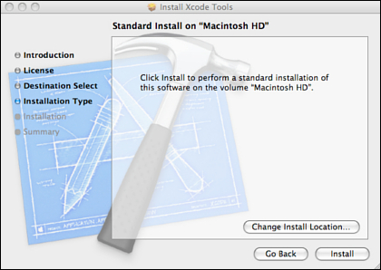
Figure 10
This is your last chance to double check your installation settings. When you click the Install button, Xcode will be installed on your machine (Shown in Figure 11). If all went well, you will finally see a "Install Succeeded Screen" (Shown in Figure 12). Now that your compiler is installed, it's time to move on to setting up TGEA.
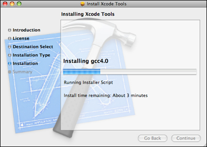
Figure 11
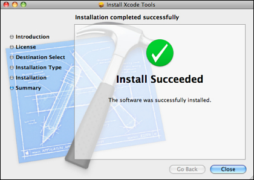
Figure 12
Installing the Engine
TGEA Introduction
Torque Game Engine Advanced is first and foremost a Software Development Kid (SDK). Essentially, the engine provides you with the tools to make your game, but does not actually design and make your game for you. Compared to other Torque products, TGEA is aimed at experienced developers. After you have purchased a license, you are free to download and install TGEA. There are many components that ship with the engine, but first let's obtain the installer.
Getting TGEA
Start by visiting GarageGames.com and log-in. After you are logged in, you will have an option to click on your account (Shown in Figure 13).
Figure 13
Once you are on your account page, look for the line containing your Torque Game Engine Advanced info (Shown in Figure 14).
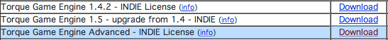
Figure 14
Click on the Download link, which will take you to the TGEA Download Page. Underneath the Macintosh Downloads section (Shown in Figure 15), you will want to click on TGEA 1.8.0.
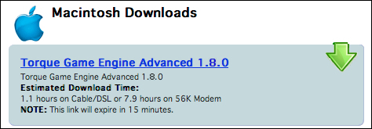
Figure 15
Now you simply have to wait for the SDK to finish downloading (Shown in Figure 16).
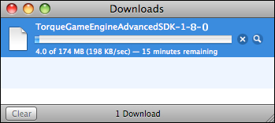
Figure 16
Installing TGEA
Bumpmaps give a material a more 3D appearance. The TGEA supports bumpmaps through the use of normalmaps. There are many free utilities available to create normalmaps. nVIDIA has a nice PhotoShop plugin for this purpose available at developer.nvidia.com.
Setting Up Your Environment
Materials
Directory Layout
This section of the documentation can also be titled “What the heck did I just download?” A fresh install of TGEA will contain dozens of folders and hundreds of files. This section will give you a high level tour of what you are looking at. If you blindly rush into development without knowing how a Torque project is put together, you may paint yourself into a corner and have to start over.
Root Directory: This will be the location you choose to install TGEA. Along with the sub-folders that make up the SDK, there are a few important files to note.
Root\Documentation: Here you will find the offline documents, which you are reading right now. You can open individual pages or load the whole document.
Root\Engine: The various sub-folders, files, and libraries found in this directory make up the core source code of TGEA
Engine\bin: Contains executables useful for advanced development, doxygen document generation, nasm assembly, etc.
Engine\lib: Contains the critical libraries for compiling a Torque project. Later in development, if you wish to add custom 3rd party projects, such as PhysX or the P5 Glove SDK, this would be a good directory to add the .dlls and .libs to link to.
Engine\Source: Organized in folders by module, this directory contains all of the files that make up the TGEA source code. Once you read a little more documentation and experimentation, finding what you want will be much easier. Still, some modules are more self-explanatory than the others. For instance, the “atlas” folder will contain the classes and code pertinent to the Atlas terrain system.
Root\GameExamples: Each folder within this directory contains a separate demo, game mod, or prototype. Each example shows off features that make TGEA stand out. This directory will most likely be where you want to create
your own game folder/project.
GameExamples\AtlasDemo: This game example shows off the blended Atlas terrain feature and a simple waterblock. Loading this project, viewing the scripts, editing the mission, etc, will give you a good understanding on how
to load and modify Atlas terrain.
GameExamples\TGEDemoAdvanced: This demo is a direct port of TGE's demo. This is a guided walkthrough of the more prominent Torque tech feature set. Even if this is a guided demo, there are several key scripts and classes
at work: particle systems, camera objects, weather control, lighting effects, scene manipulation, animation, and more.
GameExamples\Forge: The Forge game mod shows off the prettier side of Torque. This has been a conference favorite for a while. Here, you can view advanced lighting, particles, and shaders at work.
GameExamples\Stronghold: In terms of game play, Stronghold has more to show than the other mods. This is your basic FPS starter kit. The core Torque systems are in full effect: networked game play, collision, projectiles,
rendering effects (particles, explosions), environment (Sun, water, terrain), and more. If you want to jump right into developing a game prototype, modifying the Stronghold game might be the way to go.
GameExamples\T3D: New TGEA features are shown off in this game example. Before you even jump into the game, you can change your game character via the "Select Model" option. The mission itself shows off
the new feature of having multiple, tiled Legacy terrains. While not immediately apparent, the character is reacting to interiors and the terrain using the new Polysoup collision system.
*Note for Users of Older TGEA Versions*- Some key folders in the source directory you are used to coding in have been moved or renamed. The big one is that the “game” directory (containing classes for the player, AI, vehicles,
camera, etc) has been renamed to T3D. Newcomers will want to spend a lot of time in this directory as well.
Dissecting a Torque Game Folder
Each example game shares a common organization theme and folder hierarchy. So, for this next section we are going to dissect a specific game example and examine how a typical Torque project is organized. Let’s dig into Stronghold.
Base Directory Files – The three batch files found here perform useful automated routines that can speed up your development.
- DeleteDSOs.bat – Deletes all the .dso files (compiled script code) found in all sub-directories of the game example
- DeletePrefs.bat – Deletes all preference files in all the sub-directories of the game example. These files usually contain information such as custom screen resolutions, audio levels, and so on.
- generateProjects – Will create your Visual Studio projects and solutions for you. Considering the amount of files, folders, and libs that make up the TGEA SDK, you definitely want to use this if you have to
develop a gameexample from scratch
source – This folder will hold source code specific to your game will be found here. This is entirely separate from the core source code used by all the game examples.
buildFiles – Each sub-folder found here contains the projects and solution you can load into your compiler. You obviously want to choose the one that supports your compiler. The compile.bat file is a command line
application that will automatically build your solution for you, without opening your compiler. If you run the file as it is, or do not pass arguments to it in the command line, it will automatically build the VC2005
project. See Compiling the TGEA Source Code for more information.
config – This directory contains configuration files that are loaded by other applications For instance, engineDoc.conf is used by Doxygen to create an engine reference document. project.conf is used by the
generateProjecs.bat to determine how and what to include in the projects and solutions.
game – The game folder contains everything that makes up your game: scripts, GUIs, assets, and editors. From here on out, assume we are looking at folders inside of the game directory.
common – This directory is very similar to the scriptsAndAssets folder. You will find scripts, GUIs, and data just like in the scriptsAndAssets folder, except these are shared amongst all game mods added to your
project. In other words, you can create a "Survival Horror" folder in the game directory, which is completely separate from scriptsAndAssets. Both mods will share the common scripts and folders.
profile – The scripts found in this directory are used to check your graphics card for compatibility against the engine. If you do not have a supported graphics card, or you do not have capable drivers, you will be
reminded to upgrade and update.
shaders – This is the directory you should store all of your hlsl (high level shader language) files. Sub-folders are used for organization. If you have several shaders related to each other, all weather shaders for
example, you can create a folder and store them there.
tools – Your GUI editor, Mission editor, debugger, and other tools/classes will be located here. These are described in depth in other sections of this documentation
scriptsAndAssets – The bulk of your game content is found in this directory. Typically, this directory is broken down into three sections: client, server, and data.
client – Your client side scripts and data will be found here. This usually pertains to logic and GUIs not shared by in a multi-player game, like an Options Menu or action map script. In Stronghold, scripts and logic
pertaining to input binding, GUI helper scripts, and mission downloading are stored in "scripts." GUIs and images can be found in "ui"
data – Anything related to this game play assets will be found here: 3D models (shapes), environment data (skies, environment, terrains), audio files (sound). These are usually sorted by both relevancy and data type. DTS
files used to represent 3D models will be found in the “shapes” folder. DIFF files which contain building and interior geometry will be found in the “interiors” folder. OGG and WAV files for sound effects will be found in
the “sound” folder. Have a look around, as the data folder is pretty straight forward.
server – Server side functionality and scripts, which every player is affected by in a multi-player session, are found here. A large portion of your time will be spent in this directory while developing your game. This folder contains the script files used to build the player (player.cs), AI (aiplayer.cs), weapons (weapon.cs & crossbow.cs), network connection (game.cs), core game logic (game.cs), and so on. Individual scripts will be addressed in later tutorials.
Compiling TGEA SDK
Materials
Summary
Setting up TGEA can be a lengthy process, but you want to have a strong foundation and stable system before you dive into development. From here, you can go to any other part of the documentation that pertains to what
you want to start developing. There is no right or wrong starting point beyond this document. However, if you want to go from high level to low level, this is one recommended path:
Work with the GUI Editor and Mission Editor. The drag and drop functionality of these tools will allow you to experience modifying a game project without performing extensive script editing.
Study the Torque Script documentation to find out what major systems are exposed to the script language. Take the time to learn the syntax, how the example games use Torque Script, and try out some of your own custom code
Start mixing your script modifications with the components you create with the GUI and Mission editors. Following the starter tutorial in the GUI Editor section is a great example.
Begin browsing and modifying the engine source code. A great way to learn how to modify the source code is to download and integrate the free GarageGames Community Resources. Not only will you get new functionality, but these mini-tours of the engine are invaluable.
Whatever path you decide to take, there is a mantra that every newcomer to TGEA and novice programmer should memorize:
“READ. READ CODE. CODE”
Read through this documentation, and regularly check the forum posts on GarageGames.com. Read the sample code and resources posted by others to get an idea of how to modify the engine. Finally, start with simple changes to the scripts and engines. Expecting to launch out of the starting gate and creating a MMORPG will only end in frustration.